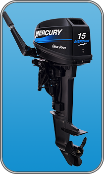

15 M SeaPro

| Технические характеристики | |
|---|---|
| Мощность на гребном валу, л.с. (кВт): | 15 (11.2) |
| Макс. об/мин (при полн. открыт. др. заслонке): | 5200-5800 |
| Число цилиндров: | 2 в ряд |
| Рабочий объём, см.куб: | 294 |
| Диам. цилиндра и ход поршня, мм: | 60 х 52 |
| Система охлаждения: | Забортной водой, с термостатом и регулировкой давления |
| Система зажигания: | Модульная, разрядно-емкостная |
| Запуск: | Ручной |
| Передаточное число редуктора: | 1.85:1 |
| Переключение передач: | Передний ход-Нейтральное положение-Задний ход (F-N-R) |
| Рулевое управление: | Румпельное |
| Ток генератора: | 6 А |
| Мощность генератора: | 76 Вт |
| Кол-во позиций угла наклона: | 3 |
| Позиций для мелководья: | 3 |
| Выхлопная система: | Через гребной винт |
| Система смазки: | С предварительным смешиванием |
| Система газораспределения: | Возвратно-петлевая |
| Удаленный топливный бак, л: | 25 |
| Рекомендуемая высота транца, мм: | 381 / 508 |
| Сухой вес, кг | 42 |
| Система предупредительной сигнализации | Защита от превышения оборотов |
| Гребной винт | В комплекте |
| Комплект приспособлений и инструментов | Стандартный с ЗИП-ом |